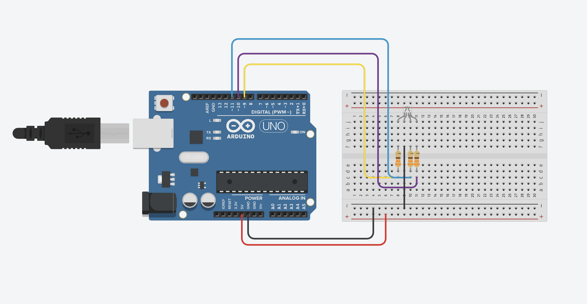

Guía de trabajo completa
Práctica: Control de LED RGB con Arduino
Completa la práctica en pantalla, guarda tu avance si no terminas y al final genera tu PDF con respuestas.
Propósito de la práctica
En esta actividad vas a aprender a controlar un LED RGB, el cual es capaz de generar muchos colores a partir de la combinación de tres colores básicos:
- Rojo
- Verde
- Azul
Además, entenderás cómo Arduino puede controlar la intensidad de cada color mediante programación.
Activación de conocimientos
Responde con tus ideas antes de empezar:
Concepto clave
Un LED RGB contiene 3 LEDs en uno solo:
- Uno rojo
- Uno verde
- Uno azul
Arduino controla la intensidad de cada uno con valores del 0 al 255.
| Valor | Significado |
|---|---|
| 0 | Apagado |
| 255 | Máxima intensidad |
Combinando estos valores puedes crear casi cualquier color.
Materiales
- 1 Arduino UNO
- 1 Protoboard
- 1 LED RGB
- 3 resistencias de 330 ohms
- Cables
- 1 computadora
Observa tu LED RGB
Identifica:
- Tiene 4 patas
- Una es más larga, esa es la terminal común
Importante: Uso de resistencias
Cada color del LED necesita una resistencia para evitar que se queme.
En esta práctica usarás 3 resistencias de 330 ohms.
Conexión del circuito
- Coloca el LED RGB en el protoboard.
- Identifica la pata común.
- Conecta el color rojo con una resistencia al pin 11.
- Conecta el color verde con una resistencia al pin 10.
- Conecta el color azul con una resistencia al pin 9.
- Conecta la pata común a GND si es cátodo común.

Código de la práctica
int red_light = 11;
int green_light = 10;
int blue_light = 9;
void setup(){
pinMode(red_light, OUTPUT);
pinMode(green_light, OUTPUT);
pinMode(blue_light, OUTPUT);
}
void loop(){
RGB_color(255,0,0);
delay(1000);
RGB_color(0,255,0);
delay(1000);
RGB_color(0,0,255);
delay(1000);
RGB_color(255,255,125);
delay(1000);
RGB_color(0,255,255);
delay(1000);
RGB_color(255,0,255);
delay(1000);
RGB_color(255,255,0);
delay(1000);
RGB_color(255,255,255);
delay(1000);
}
void RGB_color(int red_light_value, int green_light_value, int blue_light_value){
analogWrite(red_light, red_light_value);
analogWrite(green_light, green_light_value);
analogWrite(blue_light, blue_light_value);
}Comprendiendo el código
analogWrite(pin, valor);
Permite controlar la intensidad de luz.
Ejecuta
- Conecta tu Arduino.
- Sube el programa.
- Observa lo que sucede.
Observación
| Valores | Color observado |
|---|---|
| (255,0,0) | |
| (0,255,0) | |
| (0,0,255) | |
| (255,255,0) | |
| (255,255,255) |
Experimentación
Prueba nuevos colores:
RGB_color(____, ____, ____);
| Prueba | Valores | Color |
|---|---|---|
| 1 | ||
| 2 | ||
| 3 |
Reto
Logra estos colores:
| Color | R | G | B |
|---|---|---|---|
| Amarillo | |||
| Morado | |||
| Celeste |
Si algo no funciona
- ¿Las resistencias están conectadas?
- ¿El LED no está invertido?
- ¿La pata común está bien?
- ¿Los cables están firmes?
Reflexión final
Lista de logro
Firma de revisión
Profesor: ____________________________________